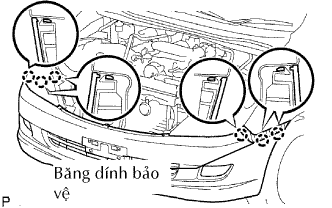
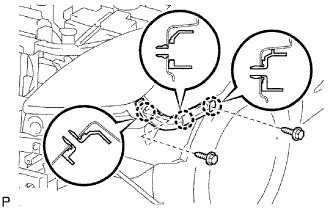

BA ĐỜ XỐC TRƯỚC > THÁO |
| 1. NGẮT CÁP ÂM RA KHỎI ẮC QUY |
| 2. THÁO LƯỚI CHE KÉT NƯỚC |
 |
Tháo 2 vít.
Dùng dụng cụ tháo kẹp, tháo kẹp ra.
Nhả khớp 5 vấu và tháo lưới che két nước.
| 3. THÁO BIỂU TƯỢNG TRÊN LƯỚI CHE KÉT NƯỚC |
 |
Dùng tôvít, nhả khớp 3 vấu và tháo biểu tượng.
| 4. THÁO NẮP BA ĐỜ XỐC TRƯỚC |
 |
Tháo 2 vít và 2 bu lông.
Dùng dụng cụ tháo kẹp, tháo 6 kẹp ra.
|  |
Hãy dán băng dính bảo vệ phía dưới tai xe trước.
Nhả khớp 6 vấu và tháo nắp.
w/ Đèn sương mù:
Ngắt 2 giắc nối của đèn sương mù.
| 5. THÁO ĐỠ BÊN BA ĐỜ XỐC TRƯỚC TRÁI |
|  |
Tháo 2 vít.
Dùng tôvít, nhả khớp 3 vấu và tháo giá đỡ bên.
| 6. THÁO ĐỠ BÊN BA ĐỜ XỐC TRƯỚC PHẢI |
| 7. THÁO TĂNG CỨNG BA ĐỜ XỐC TRƯỚC |
 |
Tháo 4 đai ốc và thanh tăng cứng.